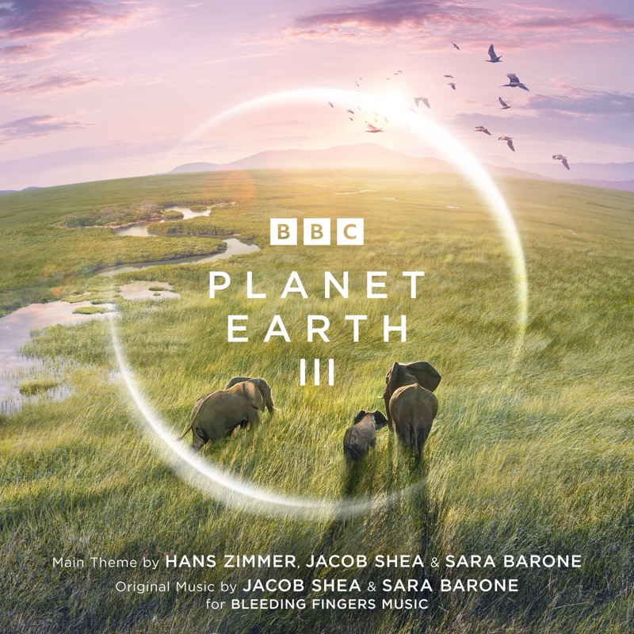

Planet Earth III (Original Television Soundtrack)
BBC 自然纪录片原声 · 主题 Hans Zimmer, Jacob Shea & Sara Barone · 原创配乐 Jacob Shea & Sara Barone for Bleeding Fingers Music
BBC 的《Planet Earth III》讲地球上的各种生物怎样在自己的环境里活下来、适应下去。原声里几乎每一首都对应一种动物或一片自然环境：鲸、海豹和鲨鱼、火烈鸟、雪豹、帝王蝶、豺、黑猩猩，还有洞穴、森林、沙漠和飓风。脱开画面单独听，一方面能感受到自然的辽阔，一方面也能体会到生存和竞争的残酷。58 首曲子分成两张碟录进 MD。
Tracks
- 01Disc 1 · Planet Earth III Suite (feat. Bastille)5:10
整部配乐的主题组曲，也是最好的入口：先从这里感受整体的气氛，再一集一集听下去。开头是轻轻的人声，随后一个四音的铜管主题升起来。人声来自 Bastille 的主唱 Dan Smith，他的声音也贯穿在各集的配乐里。
- 02Southern Right Whale3:49
- 03Sea Angel - Sea Devil3:15
- 04Seal vs Shark3:12
- 05Garter Snake4:02
- 06Raine Island Turtles4:10
- 07Hurricanes1:17
- 08Archer Fish4:19
- 09Flamingos3:16
- 10Hang Son Doong (feat. Bastille)2:51
- 11The Undergound1:29
- 12Monarch Butterflies (feat. Bastille)4:07
- 13Arctic Wolves1:53
- 14Divide and Conquer4:17
- 15Seeds and Bulbs2:08
- 16Fire1:39
- 17Snow Leopard (feat. Bastille)4:34
- 18Forests4:55
- 19Treehopper1:46
- 20Green Desert1:47
- 21Getting Old1:40
- 22Dhole3:40
- 23Uganda Chimps1:25
- 24The Okavango Delta1:48
- 25Holding Onto Love2:01
- 26Disc 2 · Frog Eggs1:20
- 27Mugger Crocs2:01
- 28Goby Fish2:46
- 29Wild Dogs3:30
- 30Freshwater Canals1:25
- 31Indus River Dolphin3:00
- 32Sad Santiago2:39
- 33Frog Hunters2:42
- 34Looking for a Partner3:32
- 35Operation Eagle3:51
- 36Finding Meaning2:02
- 37Northern Bald Ibis1:59
- 38Climate Change1:48
- 39Fighting with Paper2:01
- 40Urban Rhino1:53
- 41Monocled Cobra4:38
- 42Locust Surges1:35
- 43Ocean Deep1:39
- 44Pearl Octopus2:08
- 45Mother Octopus (feat. Bastille)3:37
- 46Horn Shark3:45
- 47Loggerhead (feat. Bastille)1:58
- 48Hungry Sealions1:39
- 49Trapped Sealions2:34
- 50Deserts and Grasslands1:35
- 51Ostriches in the Namib2:40
- 52Bowerbirds3:18
- 53Sandstorms3:30
- 54Brave and Adaptable0:58
- 55Searching for Water2:07
- 56King of the Steppe1:36
- 57Zakouma Elephants1:58
- 58Maned Wolf3:33
Credits
- Hans Zimmer, Jacob Shea & Sara Barone — main theme
- Jacob Shea & Sara Barone (Bleeding Fingers Music) — original music
- Dan Smith (Bastille) — vocals
Notes
Planet Earth III
BBC 自然纪录片系列的第三季，2023 年 10 月至 12 月在 BBC One 播出，共 8 集，由 David Attenborough 主持和解说。整部片子拍了五年，在六大洲的 43 个国家完成了 134 次拍摄。这一季除了拍动物怎样适应环境，也更多地拍到了人类活动和环境变化给它们带来的压力。原声里那些曲名，比如 Climate Change、Urban Rhino、Fighting with Paper，就是这一面的痕迹。
Hans Zimmer 与 Bleeding Fingers
主题由 Hans Zimmer 和 Jacob Shea、Sara Barone 共同创作，其余各集的原创配乐由 Shea 和 Barone 完成。两人来自 Bleeding Fingers Music，这是 Extreme Music 和 Zimmer 的 RCI Global 合办的团队，专门做电视和纪录片配乐，此前也做过 Planet Earth II。Bastille 的主唱 Dan Smith 参与了配乐，他的人声出现在片头主题和每一集里。纪录片配乐和剧情电影不同，它要衬托的是真实的影像：这里有弦乐、玻璃般脆弱的打击乐、有力的铜管和整个乐团的固定音型，也有合唱和电子音色，随着不同的生态和场景变换颜色，有美和宁静，也有痛苦、愤怒和紧迫。
和《星际穿越》放在一起听
同样是 Zimmer 的宏大，《星际穿越》把它放进宇宙和人的情感里，《Planet Earth III》则把它放回自然本身：用简单的动机反复叠加、慢慢加码，让没有画面的音乐也能在脑海里画出图景。想接着听，可以回到 2016 年的 Planet Earth II 原声（Hans Zimmer、Jacob Shea 与 Jasha Klebe），或者闭上眼睛，从 Suite 开始把整张当作一次旅行。